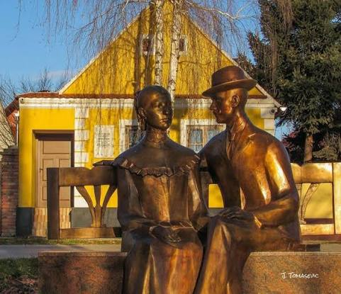
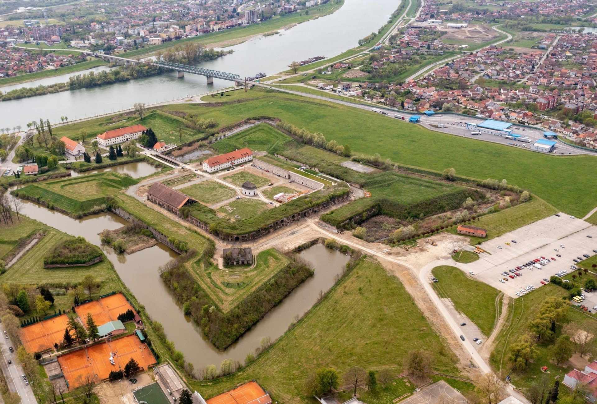

Slavonski Brod ima bogatu povijest koja seže od antičke Marsonije preko
srednjovjekovnog utvrđenog grada na Savi do današnjeg modernog središta.
Tvrđava, rodna kuća Ivane Brlić Mažuranić, Sava, Korzo
Povijesni podaci govore da kravata kao univerzalni, svjetski prepoznatljiv
simbol muškog odijevanja, potječe s našeg području pa se tako na
zemljopisnoj
karti nizozemskog karografa s kraja 17. stoljeća Slavonski Brod i okolica
nazivaju “Cravatten Statt” te se spominju u kontekstu rasporeda konjice i
pješaštva
Habsburške monarhije. Postav posvećen “kravati” može se razgledati u
Turističko-informativnom centru na središnjem gradskom trgu.

